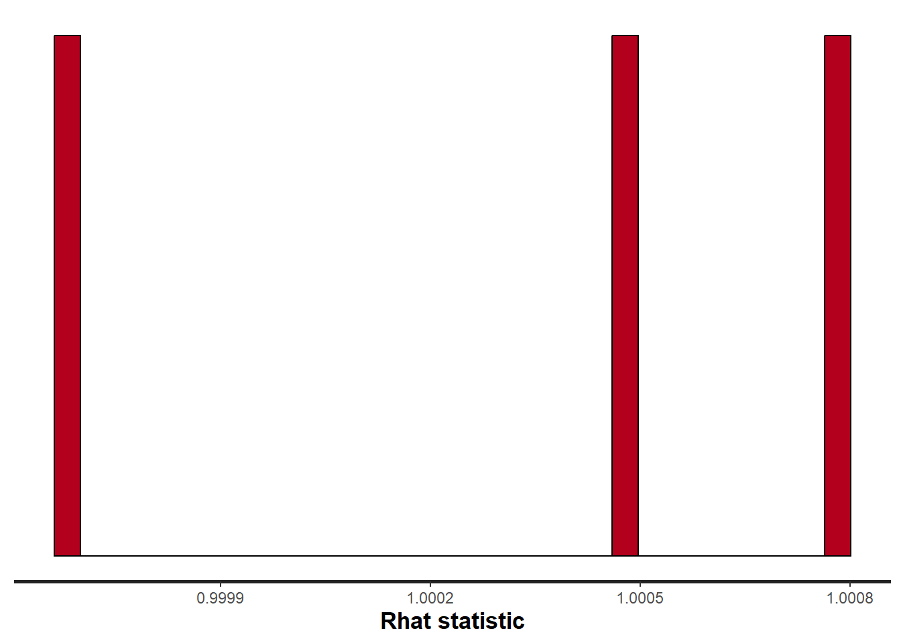

![]()
set.seed(123)
nA <- 60 #sample size from Population A
nB <- 40 #sample size from Population B
muA <- 105 #population mean of Population A
muB <- 77.5 #population mean of Population B
sigma <- 3 #standard deviation of both populations (equally varied)
yA <- rnorm(nA, muA, sigma) #Population A sample
yB <- rnorm(nB, muB, sigma) #Population B sample
y <- c(yA, yB)
x <- factor(rep(c("A", "B"), c(nA, nB))) #categorical listing of the populations
xn <- as.numeric(x) #numerical version of the population category for means parameterization. # Should not start at 0.
data <- data.frame(y, x, xn) # datasetComparing Two Populations (Stan)
Quarto
R
Academia
Software
Statistics
Abstract
This tutorial will focus on the use of Bayesian estimation to fit simple linear regression models …
Keywords
Software, Statistics, Stan
This tutorial will focus on the use of Bayesian estimation to explore differences between two populations. BUGS (Bayesian inference Using Gibbs Sampling) is an algorithm and supporting language (resembling R) dedicated to performing the Gibbs sampling implementation of Markov Chain Monte Carlo (MCMC) method. Dialects of the BUGS language are implemented within three main projects:
OpenBUGS - written in component pascal.
JAGS - (Just Another Gibbs Sampler) - written in
C++.Stan - a dedicated Bayesian modelling framework written in
C++and implementing Hamiltonian MCMC samplers.
Whilst the above programs can be used stand-alone, they do offer the rich data pre-processing and graphical capabilities of R, and thus, they are best accessed from within R itself. As such there are multiple packages devoted to interfacing with the various software implementations:
R2OpenBUGS - interfaces with
OpenBUGSR2jags - interfaces with
JAGSrstan - interfaces with
Stan
The BUGS/JAGS/Stan languages and algorithms are very powerful and flexible. However, the cost of this power and flexibility is complexity and the need for a firm understanding of the model you wish to fit as well as the priors to be used. The algorithms requires the following inputs.
Within the model:
The likelihood function relating the response to the predictors.
The definition of the priors.
Chain properties:
The number of chains.
The length of chains (number of iterations).
The burn-in length (number of initial iterations to ignore).
The thinning rate (number of iterations to count on before storing a sample).
The initial estimates to start an MCMC chain. If there are multiple chains, these starting values can differ between chains.
The list of model parameters and derivatives to monitor (and return the posterior distributions of)
This tutorial will demonstrate how to fit models in Stan (Gelman, Lee, and Guo (2015)) using the package rstan (Stan Development Team (2018)) as interface, which also requires to load some other packages.
Data generation
We will start by generating a random data set. Note, I am creating two versions of the predictor variable (a numeric version and a factorial version).
Let inspect the first few rows of the dataset using the command head
head(data)NA y x xn
NA 1 103.3186 A 1
NA 2 104.3095 A 1
NA 3 109.6761 A 1
NA 4 105.2115 A 1
NA 5 105.3879 A 1
NA 6 110.1452 A 1We can also perform some exploratory data analysis - in this case, a boxplot of the response for each level of the predictor.
boxplot(y ~ x, data)
The One Sample t-test
A t-test is essentially just a simple regression model in which the categorical predictor is represented by a binary variable in which one level is coded as \(0\) and the other \(1\). For the model itself, the observed response \(y_i\) are assumed to be drawn from a normal distribution with a given mean \(\mu\) and standard deviation \(\sigma\). The expected values are themselves determined by the linear predictor \(\mu_i=\beta_0+\beta_1x_i\), where \(\beta_0\) represents the mean of the first treatment group and \(\beta_1\) represents the difference between the mean of the first group and the mean of the second group (the effect of interest).
MCMC sampling requires priors on all parameters. We will employ weakly informative priors. Specifying “uninformative” priors is always a bit of a balancing act. If the priors are too vague (wide) the MCMC sampler can wander off into nonscence areas of likelihood rather than concentrate around areas of highest likelihood (desired when wanting the outcomes to be largely driven by the data). On the other hand, if the priors are too strong, they may have an influence on the parameters. In such a simple model, this balance is very forgiving - it is for more complex models that prior choice becomes more important. For this simple model, we will go with zero-centered Gaussian (normal) priors with relatively large standard deviations (\(1000\)) for both the intercept and the treatment effect and a wide half-cauchy (scale=\(25\)) for the standard deviation (Gelman et al. (2006)).
\[ y_i \sim \text{Normal}(\mu_i, \sigma), \]
where \(\mu_i=\beta_0+\beta_1x_i\).
Priors are defined as:
\[ \beta_j \sim \text{Normal}(0,1000), \;\;\; \text{and} \;\;\; \sigma \sim \text{Cauchy}(0,25), \]
for \(j=0,1\).
Fitting the model in Stan
Broadly, there are two ways of parameterising (expressing the unknown (to be estimated) components of a model) a model. Either we can estimate the means of each group (Means parameterisation) or we can estimate the mean of one group and the difference between this group and the other group(s) (Effects parameterisation). The latter is commonly used for frequentist null hypothesis testing as its parameters are more consistent with the null hypothesis of interest (that the difference between the two groups equals zero).
- Effects parameterisation
\[ y_i = \beta_0 + \beta_{j}x_i + \epsilon_i, \;\;\; \text{with} \;\;\; \epsilon_i \sim \text{Normal}(0,\sigma). \]
Each \(y_i\) is modelled by an intercept \(\beta_0\) (mean of group A) plus a difference parameter \(\beta_j\) (difference between mean of group A and group B) multiplied by an indicator of which group the observation came from (\(x_i\)), plus a residual drawn from a normal distribution with mean \(0\) and standard deviation \(\sigma\). Actually, there are as many \(\beta_j\) parameters as there are groups but one of them (typically the first) is set to be equal to zero (to avoid over-parameterization). Expected values of \(y\) are modelled assuming they are drawn from a normal distribution whose mean is determined by a linear combination of effect parameters and whose variance is defined by the degree of variability in this mean. The parameters are: \(\beta_0\), \(\beta_1\) and \(\sigma\).
- Means parameterisation
\[ y_i = \beta_{j} + \epsilon_i, \;\;\; \text{with} \;\;\; \epsilon_i \sim \text{Normal}(0,\sigma). \]
Each \(y_i\) is modelled as the mean \(\beta_j\) of each group (\(j=1,2\)) plus a residual drawn from a normal distribution with a mean of zero and a standard deviation of \(\sigma\). Actually, \(\boldsymbol \beta\) is a set of \(j\) coefficients corresponding to the \(j\) dummy coded factor levels. Expected values of \(y\) are modelled assuming they are drawn from a normal distribution whose mean is determined by a linear combination of means parameters and whose variance is defined by the degree of variability in this mean. The parameters are: \(\beta_1\), \(\beta_2\) and \(\sigma\).
Whilst the Stan language broadly resembles BUGS/JAGS, there are numerous important differences. Some of these differences are to support translation to c++ for compilation (such as declaring variables). Others reflect leveraging of vectorization to speed up run time. Here are some important notes about Stan:
All variables must be declared
Variables declared in the parameters block will be collected
Anything in the transformed block will be collected as samples. Also, checks will be made every loop
Now I will demonstrate fitting the models with Stan. Note, I am using the refresh=0 option so as to suppress the larger regular output in the interest of keeping output to what is necessary for this tutorial. When running outside of a tutorial context, the regular verbose output is useful as it provides a way to gauge progress.
Effects Parameterisation
stanString = "
data {
int n;
vector [n] y;
vector [n] x;
}
parameters {
real <lower=0, upper=100> sigma;
real beta0;
real beta;
}
transformed parameters {
}
model {
vector [n] mu;
//Priors
beta0 ~ normal(0,1000);
beta ~ normal(0,1000);
sigma ~ cauchy(0,25);
mu = beta0 + beta*x;
//Likelihood
y ~ normal(mu, sigma);
}
generated quantities {
vector [2] Group_means;
real CohensD;
//Other Derived parameters
//# Group means (note, beta is a vector)
Group_means[1] = beta0;
Group_means[2] = beta0+beta;
CohensD = beta /sigma;
}
"
## write the model to a text file
writeLines(stanString, con = "ttestModel.stan")Means Parameterisation
stanString.means = "
data {
int n;
int nX;
vector [n] y;
matrix [n,nX] x;
}
parameters {
real <lower=0, upper=100> sigma;
vector [nX] beta;
}
transformed parameters {
}
model {
vector [n] mu;
//Priors
beta ~ normal(0,1000);
sigma ~ cauchy(0,25);
mu = x*beta;
//Likelihood
y ~ normal(mu, sigma);
}
generated quantities {
vector [2] Group_means;
real CohensD;
//Other Derived parameters
Group_means[1] = beta[1];
Group_means[2] = beta[1]+beta[2];
CohensD = beta[2] /sigma;
}
"
## write the model to a text file
writeLines(stanString.means, con = "ttestModelMeans.stan")Arrange the data as a list (as required by Stan).
data.list <- with(data, list(y = y, x = (xn - 1), n = nrow(data)))
X <- model.matrix(~x, data)
data.list.means = with(data, list(y = y, x = X, n = nrow(data), nX = ncol(X)))Define the initial values for the chain. Reasonable starting points can be gleaned from the data themselves.
inits <- list(beta0 = mean(data$y), beta = c(NA, diff(tapply(data$y,
data$x, mean))), sigma = sd(data$y/2))
inits.means <- list(beta = tapply(data$y, data$x, mean), sigma = sd(data$y/2))Define the nodes (parameters and derivatives) to monitor.
params <- c("beta0", "beta", "sigma", "Group_means", "CohensD")
params.means <- c("beta", "sigma", "Group_means","CohensD")Define the chain parameters.
burnInSteps = 500 # the number of initial samples to discard
nChains = 2 # the number of independed sampling chains to perform
thinSteps = 1 # the thinning rate
nIter = 2000Start the Stan model (check the model, load data into the model, specify the number of chains and compile the model). Load the rstan package.
library(rstan)When using the stan function (rtsan package), it is not necessary to provide initial values. However, if they are to be supplied, the inital values must be provided as a list of the same length as the number of chains.
Effects Parameterisation
data.stan = stan(file = "ttestModel.stan",
data = data.list,
pars = params,
iter = nIter,
warmup = burnInSteps,
chains = nChains,
thin = thinSteps,
init = "random", #or inits=list(inits,inits)
refresh = 0)
#print results
print(data.stan)NA Inference for Stan model: anon_model.
NA 2 chains, each with iter=2000; warmup=500; thin=1;
NA post-warmup draws per chain=1500, total post-warmup draws=3000.
NA
NA mean se_mean sd 2.5% 25% 50% 75% 97.5%
NA beta0 105.20 0.01 0.35 104.51 104.97 105.20 105.43 105.89
NA beta -27.31 0.01 0.55 -28.37 -27.67 -27.32 -26.95 -26.22
NA sigma 2.79 0.00 0.20 2.43 2.64 2.78 2.91 3.20
NA Group_means[1] 105.20 0.01 0.35 104.51 104.97 105.20 105.43 105.89
NA Group_means[2] 77.89 0.01 0.44 77.03 77.60 77.89 78.18 78.75
NA CohensD -9.86 0.02 0.73 -11.31 -10.35 -9.83 -9.35 -8.45
NA lp__ -150.69 0.04 1.23 -153.81 -151.23 -150.35 -149.81 -149.31
NA n_eff Rhat
NA beta0 1726 1
NA beta 1543 1
NA sigma 1752 1
NA Group_means[1] 1726 1
NA Group_means[2] 3066 1
NA CohensD 1795 1
NA lp__ 1188 1
NA
NA Samples were drawn using NUTS(diag_e) at Mon Jul 22 12:16:01 2024.
NA For each parameter, n_eff is a crude measure of effective sample size,
NA and Rhat is the potential scale reduction factor on split chains (at
NA convergence, Rhat=1).Means Parameterisation
data.stan.means = stan(file = "ttestModelMeans.stan",
data = data.list.means,
pars = params.means,
iter = nIter,
warmup = burnInSteps,
chains = nChains,
thin = thinSteps,
init = "random", #or inits=list(inits.means,inits.means)
refresh = 0)
#print results
print(data.stan.means)NA Inference for Stan model: anon_model.
NA 2 chains, each with iter=2000; warmup=500; thin=1;
NA post-warmup draws per chain=1500, total post-warmup draws=3000.
NA
NA mean se_mean sd 2.5% 25% 50% 75% 97.5%
NA beta[1] 105.21 0.01 0.35 104.51 104.97 105.21 105.44 105.91
NA beta[2] -27.33 0.01 0.56 -28.43 -27.69 -27.33 -26.96 -26.22
NA sigma 2.78 0.00 0.20 2.41 2.64 2.77 2.91 3.20
NA Group_means[1] 105.21 0.01 0.35 104.51 104.97 105.21 105.44 105.91
NA Group_means[2] 77.88 0.01 0.43 77.05 77.58 77.88 78.18 78.75
NA CohensD -9.88 0.02 0.73 -11.32 -10.39 -9.86 -9.37 -8.51
NA lp__ -150.71 0.03 1.20 -153.75 -151.26 -150.40 -149.83 -149.35
NA n_eff Rhat
NA beta[1] 1986 1
NA beta[2] 2007 1
NA sigma 2144 1
NA Group_means[1] 1986 1
NA Group_means[2] 3201 1
NA CohensD 2202 1
NA lp__ 1429 1
NA
NA Samples were drawn using NUTS(diag_e) at Mon Jul 22 12:16:32 2024.
NA For each parameter, n_eff is a crude measure of effective sample size,
NA and Rhat is the potential scale reduction factor on split chains (at
NA convergence, Rhat=1).Notes
If
inits="random"thestanfunction will randomly generate initial values between \(-2\) and \(2\) on the unconstrained support. The optional additional parameterinit_rcan be set to some value other than \(2\) to change the range of the randomly generated inits. Other available options include: setinits="0"to initialize all parameters to zero on the unconstrained support; set inital values by providing a list equal in length to the number of chains; set initial values by providing a function that returns a list for specifying the initial values of parameters for a chain.In addition to the mean and quantiles of each of the sample nodes, the
stanfunction will calculate.The effective sample size for each sample - if
n.efffor a node is substantially less than the number of iterations, then it suggests poor mixing.The Potential scale reduction factor or
Rhatvalues for each sample - these are a convergence diagnostic (values of \(1\) indicate full convergence, values greater than \(1.01\) are indicative of non-convergence.
The total number samples collected is \(3000\). That is, there are \(3000\) samples collected from the multidimensional posterior distribution and thus, \(3000\) samples collected from the posterior distributions of each parameter. The effective number of samples column indicates the number of independent samples represented in the total. It is clear that for all parameters the chains were well mixed.
MCMC diagnostics
Again, prior to examining the summaries, we should have explored the convergence diagnostics. There are numerous ways of working with Stan model fits (for exploring diagnostics and summarisation).
extract the mcmc samples and convert them into a mcmc.list to leverage the various
mcmcplotsroutinesuse the numerous routines that come with the
rstanpackageuse the routines that come with the
bayesplotpackage
We will explore all of these.
- mcmcplots
First, we need to convert the rtsan object into an mcmc.list object to apply the functions in the mcmcplots package.
library(mcmcplots)
s = as.array(data.stan.means)
mcmc <- do.call(mcmc.list, plyr:::alply(s[, , -(length(s[1, 1, ]))], 2, as.mcmc))Next we look at density and trace plots.
denplot(mcmc, parms = c("Group_means", "CohensD"))traplot(mcmc, parms = c("Group_means", "CohensD"))These plots show no evidence that the chains have not reasonably traversed the entire multidimensional parameter space.
- rstan
MCMC diagnostic measures that can be directly applied to rstan objects via the rstan package include: traceplots, autocorrelation, effective sample size and Rhat diagnostics.
#traceplots
stan_trace(data.stan.means, pars = c("Group_means", "CohensD"))#autocorrelation
stan_ac(data.stan.means, pars = c("Group_means", "CohensD"))#rhat
stan_rhat(data.stan.means, pars = c("Group_means", "CohensD"))
#ess
stan_ess(data.stan.means, pars = c("Group_means", "CohensD"))Note:
Rhat values are a measure of sampling efficiency/effectiveness. Ideally, all values should be less than \(1.05\). If there are values of 1.05 or greater it suggests that the sampler was not very efficient or effective. Not only does this mean that the sampler was potentiall slower than it could have been, more importantly, it could indicate that the sampler spent time sampling in a region of the likelihood that is less informative. Such a situation can arise from either a misspecified model or overly vague priors that permit sampling in otherwise nonscence parameter space.
ESS indicates the number samples (or proportion of samples that the sampling algorithm) deamed effective. The sampler rejects samples on the basis of certain criterion and when it does so, the previous sample value is used. Hence while the MCMC sampling chain may contain \(1000\) samples, if there are only \(10\) effective samples (\(1\)%), the estimated properties are not likely to be reliable.
bayesplot
Another alternative is to use the package bayesplot, which provides a range of standardised diagnostic measures for assessing MCMC convergence and issues, which can be directly applied to the rstan object.
library(bayesplot)
#density and trace plots
mcmc_combo(as.array(data.stan.means), regex_pars = "Group_means|CohensD")Model validation
Residuals are not computed directly within rstan. However, we can calculate them manually form the posteriors.
library(ggplot2)
mcmc = as.matrix(data.stan.means)[, c("beta[1]", "beta[2]")]
# generate a model matrix
newdata = data.frame(x = data$x)
Xmat = model.matrix(~x, newdata)
## get median parameter estimates
coefs = apply(mcmc, 2, median)
fit = as.vector(coefs %*% t(Xmat))
resid = data$y - fit
ggplot() + geom_point(data = NULL, aes(y = resid, x = fit))There is no evidence that the mcmc chain did not converge on a stable posterior distribution. We are now in a position to examine the summaries of the parameters.
Parameter estimates
A quick look at posterior summaries can be obtained through the command summary which can be directly applied to our rstan object.
summary(data.stan.means)NA $summary
NA mean se_mean sd 2.5% 25%
NA beta[1] 105.211757 0.007942873 0.3539769 104.505843 104.971055
NA beta[2] -27.327628 0.012473019 0.5587401 -28.427901 -27.692813
NA sigma 2.779126 0.004297321 0.1990000 2.412497 2.636107
NA Group_means[1] 105.211757 0.007942873 0.3539769 104.505843 104.971055
NA Group_means[2] 77.884129 0.007683369 0.4346719 77.046396 77.583389
NA CohensD -9.883437 0.015622139 0.7331354 -11.321870 -10.394390
NA lp__ -150.705879 0.031681466 1.1974657 -153.748876 -151.261985
NA 50% 75% 97.5% n_eff Rhat
NA beta[1] 105.214946 105.436841 105.907771 1986.071 1.0004906
NA beta[2] -27.330669 -26.961516 -26.218176 2006.672 1.0004700
NA sigma 2.772915 2.910585 3.196914 2144.424 1.0005267
NA Group_means[1] 105.214946 105.436841 105.907771 1986.071 1.0004906
NA Group_means[2] 77.882431 78.183886 78.745200 3200.514 0.9996750
NA CohensD -9.860548 -9.367286 -8.506401 2202.355 1.0007762
NA lp__ -150.404119 -149.833903 -149.348309 1428.616 0.9995937
NA
NA $c_summary
NA , , chains = chain:1
NA
NA stats
NA parameter mean sd 2.5% 25% 50%
NA beta[1] 105.216258 0.3578476 104.503903 104.968222 105.217655
NA beta[2] -27.336027 0.5706157 -28.447036 -27.711968 -27.356123
NA sigma 2.776761 0.1979930 2.421528 2.629522 2.776330
NA Group_means[1] 105.216258 0.3578476 104.503903 104.968222 105.217655
NA Group_means[2] 77.880231 0.4303583 77.044172 77.584218 77.881041
NA CohensD -9.894731 0.7359107 -11.337046 -10.395515 -9.860308
NA lp__ -150.705058 1.2004089 -153.917640 -151.256032 -150.408954
NA stats
NA parameter 75% 97.5%
NA beta[1] 105.444986 105.920025
NA beta[2] -26.955343 -26.209090
NA sigma 2.908990 3.184759
NA Group_means[1] 105.444986 105.920025
NA Group_means[2] 78.173031 78.705582
NA CohensD -9.379888 -8.517788
NA lp__ -149.832114 -149.354270
NA
NA , , chains = chain:2
NA
NA stats
NA parameter mean sd 2.5% 25% 50%
NA beta[1] 105.207257 0.3501249 104.506351 104.972152 105.210589
NA beta[2] -27.319230 0.5466678 -28.379874 -27.668085 -27.317132
NA sigma 2.781492 0.2000399 2.409108 2.642792 2.769325
NA Group_means[1] 105.207257 0.3501249 104.506351 104.972152 105.210589
NA Group_means[2] 77.888027 0.4390520 77.062758 77.577941 77.885929
NA CohensD -9.872143 0.7304204 -11.308201 -10.383455 -9.862055
NA lp__ -150.706700 1.1949150 -153.696913 -151.262612 -150.392368
NA stats
NA parameter 75% 97.5%
NA beta[1] 105.424876 105.889371
NA beta[2] -26.970533 -26.243809
NA sigma 2.912221 3.201516
NA Group_means[1] 105.424876 105.889371
NA Group_means[2] 78.193687 78.776276
NA CohensD -9.359816 -8.505181
NA lp__ -149.835948 -149.336959The Group A is typically \(27.3\) units greater than Group B. The \(95\)% confidence interval for the difference between Group A and B does not overlap with \(0\) implying a significant difference between the two groups.
Graphical summaries
A nice graphic is often a great accompaniment to a statistical analysis. Although there are no fixed assumptions associated with graphing (in contrast to statistical analyses), we often want the graphical summaries to reflect the associated statistical analyses. After all, the sample is just one perspective on the population(s). What we are more interested in is being able to estimate and depict likely population parameters/trends. Thus, whilst we could easily provide a plot displaying the raw data along with simple measures of location and spread, arguably, we should use estimates that reflect the fitted model. In this case, it would be appropriate to plot the credibility interval associated with each group. We do this by loading functions in the package broom and dplyr.
library(broom)
library(broom.mixed)
library(dplyr)
mcmc = as.matrix(data.stan.means)
## Calculate the fitted values
newdata = data.frame(x = levels(data$x))
Xmat = model.matrix(~x, newdata)
coefs = mcmc[, c("beta[1]", "beta[2]")]
fit = coefs %*% t(Xmat)
newdata = newdata %>% cbind(tidyMCMC(fit, conf.int = TRUE, conf.method = "HPDinterval"))
newdataNA x term estimate std.error conf.low conf.high
NA 1 A 1 105.21176 0.3539769 104.49829 105.89151
NA 2 B 2 77.88413 0.4346719 77.03334 78.71763ggplot(newdata, aes(y = estimate, x = x)) + geom_pointrange(aes(ymin = conf.low,
ymax = conf.high)) + scale_y_continuous("Y") + scale_x_discrete("X") +
theme_classic()If you wanted to represent sample data on the figure in such a simple example (single predictor) we could simply over- (or under-) lay the raw data.
ggplot(newdata, aes(y = estimate, x = x)) + geom_point(data = data, aes(y = y,
x = x), color = "gray") + geom_pointrange(aes(ymin = conf.low, ymax = conf.high)) +
scale_y_continuous("Y") + scale_x_discrete("X") + theme_classic()
A more general solution would be to add the partial residuals to the figure. Partial residuals are the fitted values plus the residuals. In this simple case, that equates to exactly the same as the raw observations since \(\text{resid}=\text{obs}−\text{fitted}\) and the fitted values depend only on the single predictor we are interested in.
## Calculate partial residuals fitted values
fdata = rdata = data
fMat = rMat = model.matrix(~x, fdata)
fit = as.vector(apply(coefs, 2, median) %*% t(fMat))
resid = as.vector(data$y - apply(coefs, 2, median) %*% t(rMat))
rdata = rdata %>% mutate(partial.resid = resid + fit)
ggplot(newdata, aes(y = estimate, x = x)) + geom_point(data = rdata, aes(y = partial.resid),
color = "gray") + geom_pointrange(aes(ymin = conf.low, ymax = conf.high)) +
scale_y_continuous("Y") + scale_x_discrete("X") + theme_classic()Effect sizes
We can compute summaries for our effect size of interest (e.g. Cohen’s or the percentage ES) by post-processing our posterior distributions.
mcmc = as.matrix(data.stan.means)
## Cohen's D
cohenD = mcmc[, "beta[2]"]/mcmc[, "sigma"]
tidyMCMC(as.mcmc(cohenD), conf.int = TRUE, conf.method = "HPDinterval")NA # A tibble: 1 × 5
NA term estimate std.error conf.low conf.high
NA <chr> <dbl> <dbl> <dbl> <dbl>
NA 1 var1 -9.88 0.733 -11.3 -8.49# Percentage change (relative to Group A)
ES = 100 * mcmc[, "beta[2]"]/mcmc[, "beta[1]"]
# Probability that the effect is greater than 10% (a decline of >10%)
sum(-1 * ES > 10)/length(ES)NA [1] 1Probability statements
Any sort of probability statements of interest about our effect size can be computed in a relatively easy way by playing around with the posteriors.
mcmc = as.matrix(data.stan.means)
# Percentage change (relative to Group A)
ES = 100 * mcmc[, "beta[2]"]/mcmc[, "beta[1]"]
hist(ES)# Probability that the effect is greater than 10% (a decline of >10%)
sum(-1 * ES > 10)/length(ES)NA [1] 1# Probability that the effect is greater than 25% (a decline of >25%)
sum(-1 * ES > 25)/length(ES)NA [1] 0.978Finite population standard deviations
Estimates for the variability associated with between and within group differences can also be easily obtained.
NA # A tibble: 2 × 5
NA term estimate std.error conf.low conf.high
NA <chr> <dbl> <dbl> <dbl> <dbl>
NA 1 sd.x 19.3 0.395 18.5 20.1
NA 2 sd.resid 2.75 0.0196 2.74 2.79NA # A tibble: 2 × 5
NA term estimate std.error conf.low conf.high
NA <chr> <dbl> <dbl> <dbl> <dbl>
NA 1 sd.x 87.5 0.240 87.1 87.8
NA 2 sd.resid 12.5 0.240 12.2 12.9Unequally varied populations
We can also generate data assuming two populations with different variances, e.g. between male and female subgroups.
set.seed(123)
n1 <- 60 #sample size from population 1
n2 <- 40 #sample size from population 2
mu1 <- 105 #population mean of population 1
mu2 <- 77.5 #population mean of population 2
sigma1 <- 3 #standard deviation of population 1
sigma2 <- 2 #standard deviation of population 2
n <- n1 + n2 #total sample size
y1 <- rnorm(n1, mu1, sigma1) #population 1 sample
y2 <- rnorm(n2, mu2, sigma2) #population 2 sample
y <- c(y1, y2)
x <- factor(rep(c("A", "B"), c(n1, n2))) #categorical listing of the populations
xn <- rep(c(0, 1), c(n1, n2)) #numerical version of the population category
data2 <- data.frame(y, x, xn) # dataset
head(data2) #print out the first six rows of the data setNA y x xn
NA 1 103.3186 A 0
NA 2 104.3095 A 0
NA 3 109.6761 A 0
NA 4 105.2115 A 0
NA 5 105.3879 A 0
NA 6 110.1452 A 0Start by defining the model
\[ y_i = \beta_0 + \beta_1x_i + \epsilon, \]
where \(\epsilon_1 \sim \text{Normal}(0,\sigma_1)\) for \(x_1=0\) (females), and \(\epsilon_2 \sim \text{Normal}(0,\sigma_2)\) for \(x_2=1\) (males). In Stan code, the model becomes:
stanStringv3 = "
data {
int n;
vector [n] y;
vector [n] x;
int<lower=1,upper=2> xn[n];
}
parameters {
vector <lower=0, upper=100>[2] sigma;
real beta0;
real beta;
}
transformed parameters {
}
model {
vector [n] mu;
//Priors
beta0 ~ normal(0,1000);
beta ~ normal(0,1000);
sigma ~ cauchy(0,25);
mu = beta0 + beta*x;
//Likelihood
for (i in 1:n) y[i] ~ normal(mu[i], sigma[xn[i]]);
}
generated quantities {
vector [2] Group_means;
real CohensD;
real CLES;
Group_means[1] = beta0;
Group_means[2] = beta0+beta;
CohensD = beta /(sum(sigma)/2);
CLES = normal_cdf(beta /sum(sigma),0,1);
}
"
## write the model to a text file
writeLines(stanStringv3,con="ttestModelv3.stan")We specify priors directly on \(\sigma_1\) and \(\sigma_2\) using Cauchy distributions with a scale of \(25\). Next, arrange the data as a list (as required by Stan) and define the MCMC parameters.
data2.list <- with(data, list(y = y, x = (xn - 1), xn = xn, n = nrow(data)))
paramsv3 <- c("beta0","beta","sigma","Group_means","CohensD", "CLES")
burnInSteps = 500
nChains = 2
thinSteps = 1
nIter = 2000Finally, fit the model in Stan and print the results.
data.stanv3 = stan(file = "ttestModelv3.stan",
data = data2.list,
pars = paramsv3,
iter = nIter,
warmup = burnInSteps,
chains = nChains,
thin = thinSteps,
init = "random", #or inits=list(inits,inits)
refresh = 0)
#print results
print(data.stanv3)NA Inference for Stan model: anon_model.
NA 2 chains, each with iter=2000; warmup=500; thin=1;
NA post-warmup draws per chain=1500, total post-warmup draws=3000.
NA
NA mean se_mean sd 2.5% 25% 50% 75% 97.5%
NA beta0 105.20 0.01 0.36 104.49 104.96 105.20 105.44 105.92
NA beta -27.32 0.01 0.60 -28.52 -27.71 -27.32 -26.93 -26.14
NA sigma[1] 2.79 0.01 0.26 2.35 2.61 2.77 2.95 3.34
NA sigma[2] 2.87 0.01 0.33 2.31 2.63 2.84 3.07 3.59
NA Group_means[1] 105.20 0.01 0.36 104.49 104.96 105.20 105.44 105.92
NA Group_means[2] 77.88 0.01 0.47 76.97 77.56 77.88 78.19 78.78
NA CohensD -9.71 0.01 0.74 -11.14 -10.22 -9.69 -9.21 -8.27
NA CLES 0.00 0.00 0.00 0.00 0.00 0.00 0.00 0.00
NA lp__ -150.25 0.04 1.43 -154.08 -150.92 -149.94 -149.21 -148.49
NA n_eff Rhat
NA beta0 2243 1
NA beta 2272 1
NA sigma[1] 2549 1
NA sigma[2] 2504 1
NA Group_means[1] 2243 1
NA Group_means[2] 3134 1
NA CohensD 2727 1
NA CLES 2487 1
NA lp__ 1151 1
NA
NA Samples were drawn using NUTS(diag_e) at Mon Jul 22 12:17:07 2024.
NA For each parameter, n_eff is a crude measure of effective sample size,
NA and Rhat is the potential scale reduction factor on split chains (at
NA convergence, Rhat=1).References
Gelman, Andrew et al. 2006. “Prior Distributions for Variance Parameters in Hierarchical Models (Comment on Article by Browne and Draper).” Bayesian Analysis 1 (3): 515–34.
Gelman, Andrew, Daniel Lee, and Jiqiang Guo. 2015. “Stan: A Probabilistic Programming Language for Bayesian Inference and Optimization.” Journal of Educational and Behavioral Statistics 40 (5): 530–43.
Stan Development Team. 2018. “RStan: The R Interface to Stan.” http://mc-stan.org/.